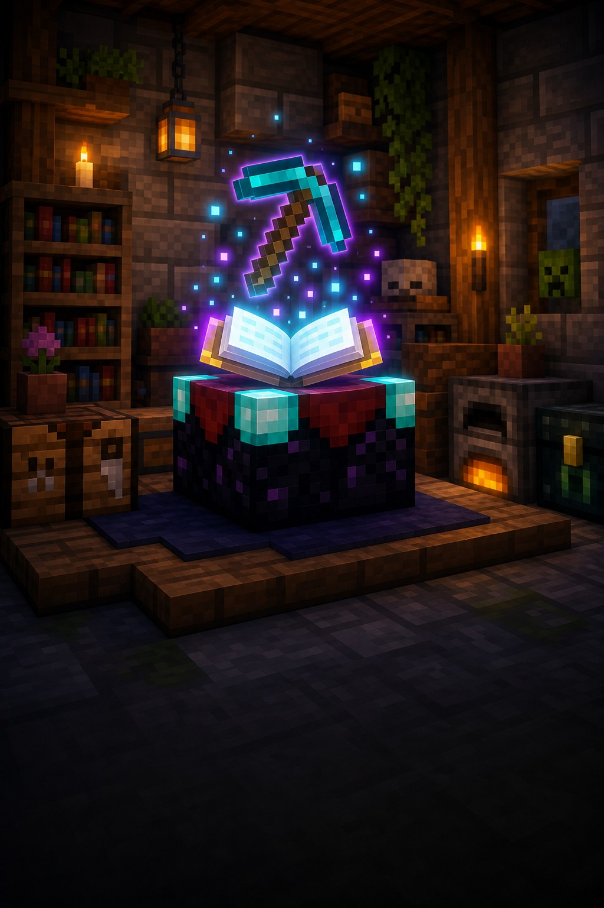

Важливе відкриття
Зроби речі крутішими
Звичайна кирка може стати швидшою.
Стіл зачарувань дає речам випадкові корисні чари — за досвід і лазурит.

Навіщо це потрібно?
Чари не просто роблять річ красивішою. Вони дають їй нову корисну властивість: швидше копати, довше захищати або сильніше бити.
Інструменти
Кирка може копати швидше або давати більше ресурсів.
Броня
Допомагає довше виживати в боях, вогні чи падіннях.
Зброя
Меч або лук може завдавати більше шкоди чи давати здобич.
Три прості дії
Як зачарувати річ
1Поклади річІнструмент, зброю, броню або книгу+
Відкрий стіл зачарувань і поклади в нього річ. Праворуч з’являться три варіанти.
2Додай лазуритСиній мінерал для чарів+
Поклади лазурит у другу комірку. Тепер видно, скільки рівнів досвіду та лазуриту коштує кожен варіант.
3Обери один варіантЧари визначаються не повністю+
Натисни на варіант — річ отримає чари. Точну назву ефекту гра не обіцяє наперед.
Зачарована книга згодом переносить чари на річ через ковадло.
Зачарування: як це виглядає
кирка
і досвід
чарами
● Сильніші варіанти коштують більше рівнів.
Підказка мандрівникові
Важливо знати
Вибір трохи випадковий
Побачиш ціну, але не повний список чарів до вибору.
Полиці допомагають
До 15 книжкових полиць відкривають сильніші варіанти.
Книга теж підходить
Її чари можна пізніше перенести ковадлом.
Маленьке завдання
Спробуй за 5 хвилин
- Зроби стіл зачарувань і візьми трохи лазуриту.
- Зачаруй просту книгу або залізну кирку.
- Прочитай, який ефект дістався твоїй речі.
★ Бонус: постав навколо столу перші книжкові полиці.